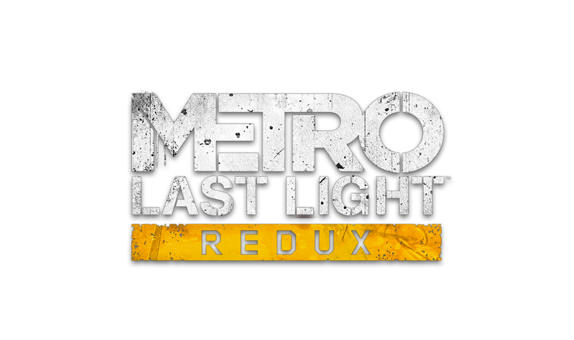

- 2014
- 16+
- 4A Games
- Survival horror

Metro: Last Light Redux – максимально продуманная и реалистичная игра в жанре экшена с огромным 3D миром, которая является продолжением Metro Redux. Вселенная Metro рассказывает историю жителей Москвы, город которых оказался уничтожен ядерным ударом в 2013 году. Единственным спасением оказалось метро, которое вообще-то задумывалось как бомбоубежище. Человечество влачит жалкое существование на станциях, контролируемых различными группировками. На некоторых станциях и вовсе беснуются монстры, перемещаться по станциям в одиночку опасно. Но самую большую опасность представляет поверхность, находиться там долгое время равносильно смерти.